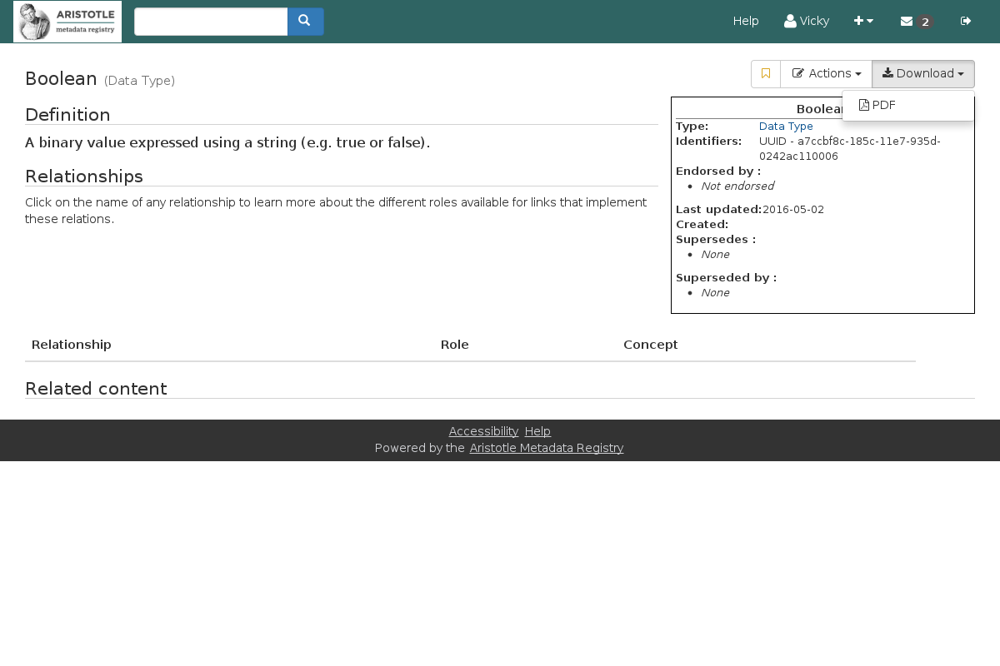
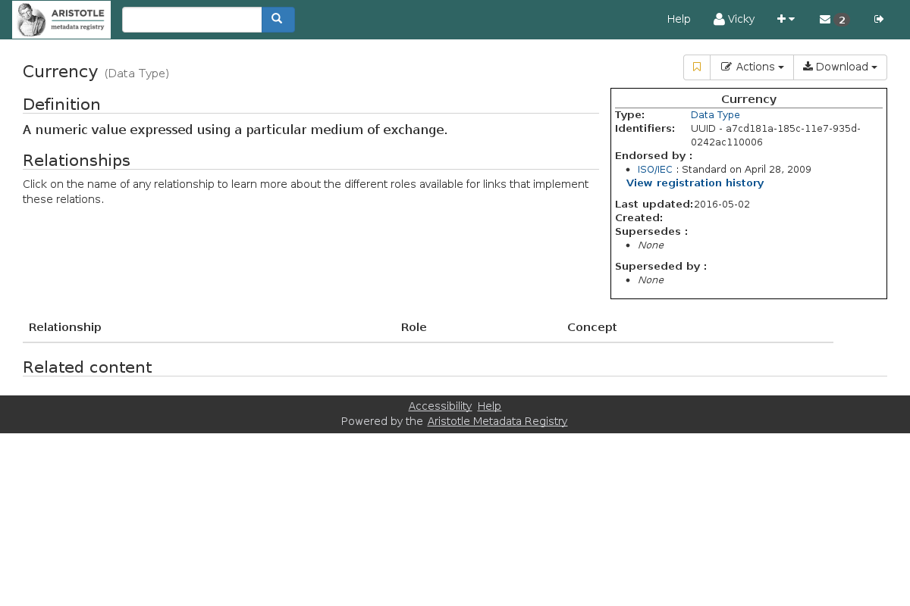

Navigation
index
next
|
previous
|
Aristotle Metadata Registry User Documentation 1.5.0 documentation
»
Searching for content
»
Table Of Contents
Contents:
How to read this document
Searching for content
Searching for content
Browsing the registry
An Item page
Features of Aristotle-MDR
Roles within the registry
Getting help
The Dashboard
Creating and editing metadata
Using the Aristotle API
Previous topic
Browsing the registry
Next topic
Features of Aristotle-MDR
This Page
Show Source
Quick search
An Item page
¶

When logged in

Navigation
index
next
|
previous
|
Aristotle Metadata Registry User Documentation 1.5.0 documentation
»
Searching for content
»